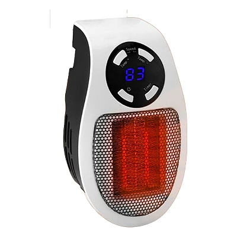
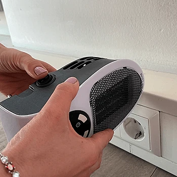

Was ist QuikHeat Pro und wie funktioniert es?
QuikHeat Pro ist ein kleiner Heizlüfter, der direkt in die Steckdose gesteckt wird. Laut der offiziellen Website ist er für kleine Bereiche gedacht, etwa den Schreibtisch, das Schlafzimmer, das Kinderzimmer oder das Bad am Morgen, und soll schnell und gleichmäßig um Sie herum Wärme verbreiten, ohne dass der ganze Raum beheizt werden muss.
Als Heizelement nennt der Hersteller ein keramisches PTC-Element. PTC steht für einen positiven Temperaturkoeffizienten: Das Element begrenzt seine Leistung selbst, wenn es heiß wird, und schaltet laut Website bei Überhitzung automatisch ab. Ein eingebauter Ventilator verteilt die warme Luft. Vor dem Ausschalten läuft das Gerät laut Hersteller 60 Sekunden zum Abkühlen nach.
Über ein digitales Thermostat mit Plus- und Minus-Tasten stellen Sie die gewünschte Temperatur ein. Laut Spezifikation reicht der Bereich von 15 bis 32 Grad Celsius. Das Gerät misst 19 × 11,5 × 12,5 Zentimeter und wiegt etwa ein halbes Kilogramm. Es soll leise arbeiten und ohne Aufbau sofort einsatzbereit sein.
Zur Einordnung der Werbung: Die Website spricht von einem „kabellosen“ Gerät, gemeint ist, dass es kein eigenes Kabel hat, sondern direkt in der Steckdose sitzt. Aussagen, dass der Heizer „Wärme aus der Steckdose zieht“ und deshalb kaum Strom verbraucht, sind physikalisch nicht haltbar: Ein elektrischer Heizer wandelt Strom in Wärme um. Sparen kann er nur, wenn Sie gezielt einen kleinen Bereich heizen, statt die Zentralheizung höher zu drehen.
Für den gelegentlichen Einsatz in kleinen Räumen kann ein solches Gerät praktisch sein; als Ersatz für eine Heizung ist es nicht gedacht. Laut Website haben sich bereits über 2.000 Kundinnen und Kunden für den QuikHeat Pro entschieden, und die Bewertungen sollen im Durchschnitt bei 4,9 Sternen liegen.
QuikHeat Pro Funktionen
Laut der offiziellen Website und den Produktspezifikationen:
Heizelement: keramisches PTC-Element mit automatischem Überhitzungsschutz.
Thermostat: digitale Anzeige, Temperatur einstellbar von 15 bis 32 °C über Plus- und Minus-Tasten.
Ventilator: verteilt die Wärme gleichmäßig, geräuscharmer Betrieb.
Sicherheit: mehrfaches Sicherheitssystem, 60 Sekunden Nachlauf zum Abkühlen.
Abmessungen und Gewicht: 19 × 11,5 × 12,5 cm, etwa 0,5 kg.
Stromversorgung: direkt in die Wandsteckdose; die Website nennt 110–125 V (US) und 220–240 V.
Eine Angabe zur Heizleistung in Watt macht die Website nicht. Auf den Produktbildern ist das Gerät weiß mit schwarzem Bedienfeld und einem Gitter vor dem Heizelement, auf dem „Do not cover“ steht. Die Temperaturanzeige auf einem Foto zeigt einen Wert in Fahrenheit; prüfen Sie nach der Lieferung, ob sich die Anzeige auf Celsius umstellen lässt.
Auf den Fotos sind am Bedienfeld außerdem Symbole für einen Ventilatormodus und einen Timer zu erkennen. Die Website selbst beschreibt diese Funktionen nicht genauer. Im Vergleich mit anderen Geräten hebt der Hersteller die günstige Heizlösung, das mehrfache Sicherheitssystem, die einfache Bedienung, den geräuscharmen Betrieb, die Anzeige und die kompakte Größe hervor; dieser Vergleich ist eine Herstellerangabe.
QuikHeat Pro Anwendung
Laut der offiziellen Website ist die Einrichtung sehr einfach: Gerät in die Steckdose stecken, einschalten und die gewünschte Temperatur einstellen. Das Thermostat regelt den Betrieb dann selbst.
Der Hersteller gibt in den häufig gestellten Fragen klare Sicherheitshinweise. Das Gerät soll ausschließlich direkt in eine geerdete Wandsteckdose gesteckt werden, nicht in eine Steckdosenleiste, nicht an eine Zeitschaltuhr und nicht an ein Verlängerungskabel. Es soll nur eingesteckt bleiben, solange Personen im Haus sind, und darf nicht abgedeckt werden. Lesen Sie vor der Verwendung alle Sicherheitshinweise in der Anleitung.
Allgemeine Hinweise für elektrische Heizgeräte: Halten Sie Vorhänge, Möbel, Kleidung und Papier fern, und stellen Sie sicher, dass Kinder und Haustiere nicht an das heiße Gitter kommen. Im Badezimmer sollte das Gerät nur so eingesteckt werden, dass es nicht mit Wasser in Berührung kommt, und nicht in der Nähe von Badewanne oder Dusche.
Für die Wirkung gilt: Je kleiner der Raum und je näher Sie am Gerät sitzen, desto eher spüren Sie die Wärme. Einen großen, schlecht isolierten Raum wird ein Mini-Heizer kaum spürbar erwärmen. Schalten Sie das Gerät aus und ziehen Sie es aus der Steckdose, wenn Sie den Raum verlassen oder schlafen gehen, sofern die Anleitung nichts anderes sagt.
QuikHeat Pro – Rückerstattung
Laut der offiziellen Website gilt eine 30-Tage-Geld-zurück-Garantie. Wenn Sie nicht zufrieden sind, können Sie das Gerät innerhalb von 30 Tagen ab Erhalt zurückschicken.
Die Rückgaberichtlinie des Verkäufers beschreibt den Ablauf genauer. Zuerst wenden Sie sich an den Kundenservice per E-Mail; es gibt eine eigene Adresse für deutschsprachige Kundinnen und Kunden. Geben Sie an, ob Sie einen Ersatz oder eine Erstattung wünschen. Die Ware muss sich im Originalzustand befinden, mit Originalverpackung und sicher verpackt.
Zurückgeschickt wird an die Adresse, die der Kundenservice nennt; andere Adressen werden laut Richtlinie abgelehnt. Für die Erstattung braucht der Verkäufer die Sendungsnummer der Rücksendung. Nach Ablauf der 30 Tage werden Rücksendungen nicht mehr angenommen.
Laut den häufig gestellten Fragen werden alle Bestellungen innerhalb von 48 Stunden verschickt, und die Standardlieferung dauert je nach Standort 5 bis 12 Werktage. Für Verbraucher in der EU gilt zusätzlich das gesetzliche Widerrufsrecht von 14 Tagen. In der Hauptsaison oder bei schlechtem Wetter kann sich die Lieferung laut Website leicht verzögern.
Verkäufer ist laut Impressum die Label Products B.V. mit Sitz in Helmond in den Niederlanden. Bewahren Sie die Originalverpackung und Ihre Bestellbestätigung auf, damit eine Rückgabe innerhalb der Frist ohne Probleme möglich ist. Bei einem Defekt wenden Sie sich direkt an den Kundenservice und beschreiben Sie das Problem möglichst genau.
QuikHeat Pro Kundenbewertungen
-
Matt R.Verifizierter Kauf
„Ich war so beeindruckt von dem ersten Gerät, dass ich gleich drei weitere bestellt habe. Jetzt habe ich einen in meinem Büro, einen in der Garage, und meine Frau benutzt einen in der Küche. Für kleine Räume sind sie perfekt!“
-
LynnVerifizierter Kauf
„Das Zimmer meiner Tochter ist immer das kälteste im Haus. Ich habe ihr ein QuikHeat Pro gekauft und jetzt hat sie es jede Nacht gemütlich. Es ist klein, sicher und genau das, was wir brauchten!“
-
MarthaVerifizierter Kauf
„Ich benutze meinen im Schlafzimmer, weil ich nicht einschlafen kann, wenn ich friere. QuikHeat Pro wärmt meinen Raum auf, ohne dass die Heizung im ganzen Haus anspringt. Er ist leise und einfach zu bedienen.“
QuikHeat Pro – Wo kaufen?
QuikHeat Pro wird über die offizielle Website get-quikheatpro.com verkauft. Dort finden Sie die Übersicht der Eigenschaften, einen Vergleich mit anderen Geräten, die Kundenbewertungen, die häufig gestellten Fragen mit den Sicherheitshinweisen und die Bestellseite. Links zu Impressum, Rückgaberichtlinie und Widerruf stehen im Fußbereich der Seite.
Steckdosen-Heizlüfter in dieser Bauform gibt es von vielen Anbietern, auch im Baumarkt. Bei Angeboten auf Marktplätzen ist nicht sicher, ob es sich um dasselbe Modell handelt, und die 30-Tage-Garantie des Verkäufers gilt dort in der Regel nicht. Kaufen Sie deshalb direkt beim Verkäufer.
Achten Sie beim Besuch darauf, dass die Adresse get-quikheatpro.com lautet. Die Seite arbeitet mit Hinweisen auf knappe Lagerbestände und zeitlich begrenzte Angebote; lassen Sie sich davon nicht drängen und prüfen Sie im Bestellvorgang die Bestellübersicht. Nach dem Versand erhalten Sie laut Website eine E-Mail mit einer Sendungsverfolgungsnummer und einem Link, über den Sie den Status Ihrer Lieferung verfolgen können. Bei Fragen hilft der Kundenservice per E-Mail auf Deutsch weiter.
Um sicherzugehen, dass Sie das Originalprodukt erhalten, besuchen die meisten Nutzer die offizielle Website.
Ist QuikHeat Pro Betrug?
Nach den verfügbaren Informationen gibt es keinen Hinweis darauf, dass QuikHeat Pro Betrug ist. Das Gerät wird über eine eigene Website mit Spezifikationen, Sicherheitshinweisen, Rückgaberichtlinie und Impressum verkauft. Verkäufer ist laut Impressum die Label Products B.V. aus Helmond in den Niederlanden, mit Handelsregisternummer und Umsatzsteuer-Identifikationsnummer.
Positiv sind die konkreten Sicherheitshinweise in den häufig gestellten Fragen, die Abmessungen und der Temperaturbereich, die 30-tägige Geld-zurück-Garantie und der deutschsprachige Kundenservice per E-Mail.
Es gibt aber deutliche Punkte, die Aufmerksamkeit verdienen. Das Werbeversprechen, mit dem Gerät Heizkosten zu sparen, gilt nur unter bestimmten Bedingungen; ein elektrischer Heizer verbraucht Strom wie jedes andere elektrische Heizgerät. Die Leistung in Watt wird nicht genannt. Die Spannungsangabe nennt US- und britische Steckdosen, die Fotos zeigen aber auch eine deutsche Steckdose. Aussagen wie „Wissenschaftler sagen einen außergewöhnlich kalten Winter voraus“ dienen dem Verkauf, ebenso Hinweise auf nur noch wenige Geräte im Lager.
Vorsicht ist außerdem bei Angeboten außerhalb der offiziellen Website geboten, denn dort gilt die Garantie des Verkäufers in der Regel nicht.
Wie bei jedem günstigen Heizgerät sollten Sie realistische Erwartungen haben. Wer die Bedingungen kennt, die Sicherheitshinweise beachtet und direkt auf der offiziellen Website bestellt, geht nach heutigem Stand kein besonderes Risiko ein.
Wer Produktdetails überprüfen oder die aktuelle Verfügbarkeit prüfen möchte, ist auf der offiziellen QuikHeat Pro-Website am sichersten aufgehoben.
